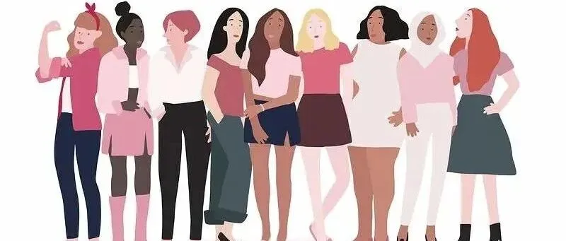
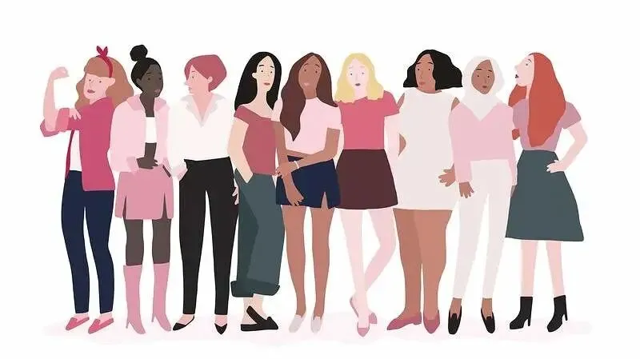
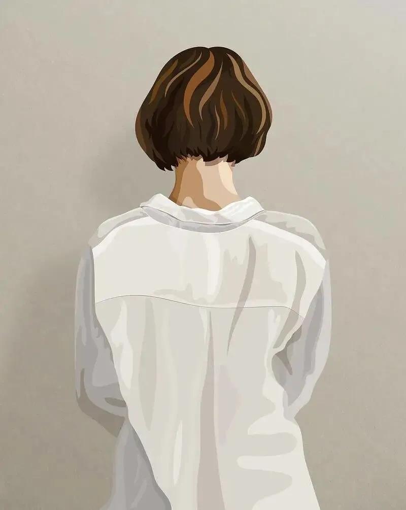
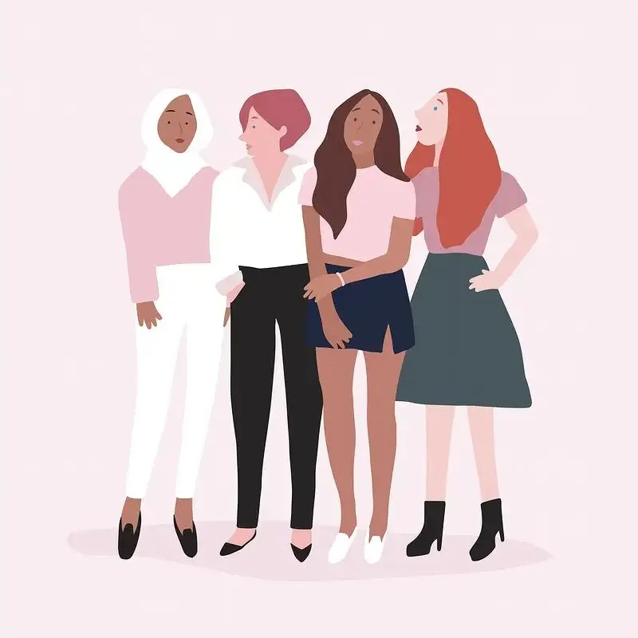
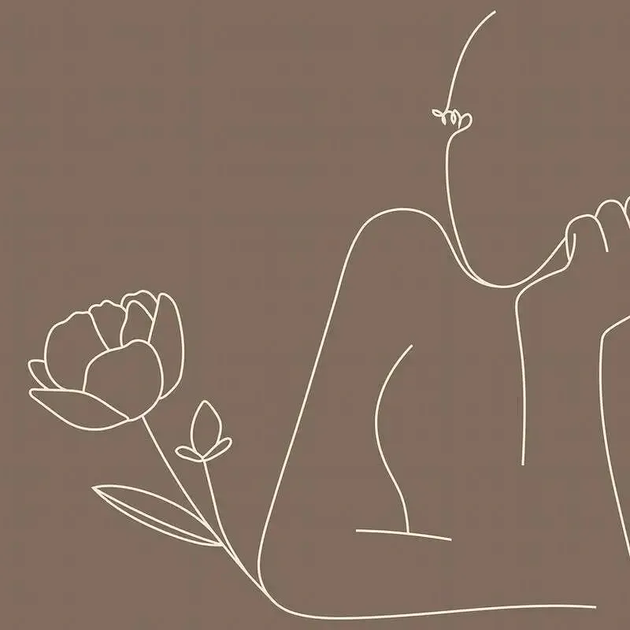
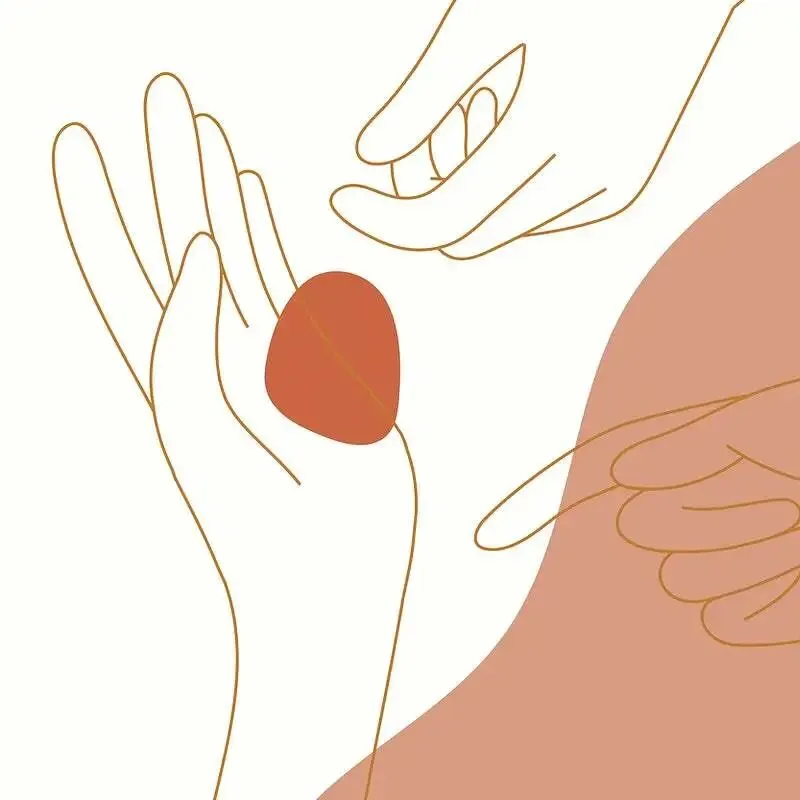

家庭暴力与Covid19
——“影子流行病”

目录 ｜Contents
一、引言
二、正文
（一）疫情是如何加剧了海外妇女遭受暴力的风险的？
（二） 疫情期间受害者如何自救
（三）为适应疫情，一些国家的做法
（四）总结
三、参考文献
Part 01. 引言
全球有三分之一的女性在其一生中会遭受来自亲密伴侣的身体或性暴力或非伴侣的性暴力——这一数字在过去十年中基本保持未变，世界卫生组织和联合国妇女署在今年3月联合发布的一份报告中指出。而新型冠状病毒的大流行则让全球的家暴状况继续恶化。
在法国，有关家庭暴力的报告从2020年3月17日封锁开始以来增加了30%；在塞浦路斯和新加坡，求助热线电话分别增加了30%和33%；在阿根廷，自从 2020年3月20日封锁开始以来，有关家庭暴力的紧急求助电话增加了25%。加拿大、德国、西班牙、英国和美国都报告了家庭暴力案件和对紧急庇护所需求的增加。
无论生活在世界的哪一个角落，如果妇女或女孩的家人或亲密伴侣有暴力倾向，疫情带来的行动限制、经济压力和心理干扰，都有可能使得施暴者加剧对妇女的暴力行为。 家暴这颗无形的定时炸弹，在世界各地悄然引爆。

图片来源：rawpixels
Part 02. 正文
（一）
疫情是如何加剧了海外妇女遭受暴力的风险的？
1. 关注度降低。疫情期间，人们对于疫情的关注有可能会远远高于其他方面。每天有多少新增？哪里又封锁了？社会对于遭受暴力行为女性的关注和保护也相应被削弱。
2. 隔离措施。随着居家隔离措施的实施，家庭成员密切接触的时间增多，受害者可能会遭到来自施暴者的更加严重的暴力伤害。隔离期间，受害者可能会因为与施暴者长期共处一室而无法获得电话或网络支持，失去与外界联系，从而更加无法逃离。施暴者可能还会对新闻或媒体消息的获取进行控制，使他们自身成为所有信息唯一的获取来源。
3. 经济剥削。疫情影响下，多国失业率上升，工作受到影响的女性群体会出于经济因素无法离开施暴者，如，她们或许无法支付额外的酒店开销，无法承担一个人的生活等等。施暴者也可能会就经济方面对受害者进行进一步剥削。
4. 疫情削弱了家暴受害者的社会支持系统。如世界各地家暴求助机构的人员减少，效率降低；避难所、热线电话、法律援助等服务也有可能缩减；宾馆酒店暂停营业；甚至在某些疫情严重的国家，法院仅提供线上受理服务等等，这些都进一步导致处于家暴中的女性难以获得帮助。
图片来源：rawpixels
联合国秘书长安东尼奥·古特雷斯早在去年4月初就已经对这一问题表达了高度的关注。他说：“我们知道，封锁和隔离对控制新冠病毒病至关重要，但这会导致妇女被迫跟施虐者待在一起.....医疗保健提供者和警察不堪重负，人员不足。当地支持团体陷入瘫痪或资金短缺。一些家庭暴力避难所已关闭，另一些则人满为患。我敦促所有国家政府预防和解决对妇女的暴力行为。”

图片来源：rawpixels
（二）
疫情期间受害者如何自救
1. 家暴发生的第一时间，先进行自救：马上躲入房间，反锁房门；随后拨打报警电话或向家暴救助机构求助。保留警方证明：包括出警记录、报警回执、询问笔录等等。
2. 注意及时取证：用手机录像，拍摄自己的伤情照片，告知好友等。
3. 在家里设置一个“安全屋”：如果发生争吵，确认家里有一间没有锋利物品的房间。对某些受害者，尤其是疫情隔离期间与施虐者共处一室的受害者而言，可能没有地方是真正安全的，所以这个屋子只能说是相对安全的屋子，尝试着在家里找到几处风险较低的地方。
4. 为了避免自救后再次被家暴：如果条件允许，受害者应搬离现有居所，与施暴者分开居住，可考虑去家暴救助庇护所暂住，但切记要对自己的居住地点保密；或者可联系亲友，前往亲友的住所暂住，或到酒店暂住。
5. 申请“人身安全保护令”：为了预防可能(继续)发生的家庭暴力，申请人可以请求法院限定被申请人的行为，通过获得保护令而免于任何形式或特定形式的暴力。
6. 家暴受害者被殴打致伤需及时就医：可第一时间拨打报警电话、医疗急救电话，或者在家暴救助机构人员的帮助下前往就医。另外，有条件的可以自行前往医院就医。注意在过程中要及时保留病历资料和伤情鉴定等材料：包括病历、验伤报告、伤情鉴定书、医药费单据等。

图片来源：rawpixels
还有一些小技巧：
1. 与至少两个好友约定好“暗号”：在遇到问题时，请他们通过指定的暗号来帮助你。提前明确他们需要在你发来暗号时做什么。和这些朋友提前商量好逃生计划，规划好如果逃走，你可以与哪些信任的亲朋好友住在一起。
2. 准备应急包： 里面最好装有一套多余的钥匙，你的衣物、重要文件复印件等。
3. 重要文件拍照备份，发送给你信任的朋友或亲人：重要文件包括：身份证明、社保卡、出生证明、医保信息、和施暴者的关系证明材料：比如结婚证等。用手机或电脑发送文件时注意发送到施暴者看不到的邮箱和账号。

图片来源：rawpixels
（三）
为适应疫情，一些国家的做法
一些国家和地区已经在适应疫情带来的隔离状况，实施有可能会减少家庭暴力的做法。例如，法国在杂货店和药店设立了警告系统，使家庭暴力受害者能够及时提醒当局，受害者也可以通过使用已经推出的暗语来提醒工作人员需要帮助；美国的全国家庭暴力热线也一直通过在线短信聊天提供服务，以便家庭暴力的受害者可以寻求帮助。
图片来源：rawpixels
（四）
总结
疫情之前，全球有2.43亿妇女和女孩在过去一年中受到其亲密伴侣的虐待。而疫情更加剧了暴力行为，使得很多社会服务机构无法提供充足的支持，受害者想要获取帮助变得更加困难。
此次疫情是对全球促进性别平等的一个考验，在当前和未来可能发生的大流行病中，社区工作者、媒体、医生、警察等群体都需要更加紧密合作处理基于性别的暴力问题。
结束对妇女的暴力是每个人的责任！
（声明：本文部分内容援引自网络、媒体新闻及研究报告，文章仅代表作者本人观点。）
Part 03. 参考文献
1.关注：疫情暴发增加女性遭遇暴力的风险
https://www.who.int/china/zh/news/feature-stories/detail/focus-covid-19-exacerbates-risks-of-violence-for-women
2.Gender-Based Violence During COVID-19 Pandemic: A Mini-Review
https://www.frontiersin.org/articles/10.3389/fgwh.2020.00004/full
3.疫情期间遇到家暴怎么办？维权指南来了
https://www.sohu.com/a/376758786_120091004
4.新冠疫情期间的自保规划：一份暴力幸存者给其他受害者们的建议
https://sanctuaryforfamilies.org/safety-planning-covid19-ch/
5.Take action: 10 ways you can help end violence against women, even during a pandemic
https://www.unwomen.org/en/news/stories/2020/11/compilation-take-action-to-help-end-violence-against-women
在良好的读者反馈下，公益课堂将会作为Avoice长期栏目继续开展。感谢每一位读者的支持与喜爱，期待公益课堂能让更多人走进海外华人女性的生活，带去爱与温暖。
文字 I Avoice Team
排版 I 叶蕾
图片 I rawpixels
欢迎添加Avoice女性保护小助手微信：Avoice-WomenAid

Avoice期望关注女性权益的您能够转发此推文至海外华人社群、微信朋友圈等平台。
您的每一次传播都可能让我们触及到一位需要帮助的女性，您的每一次发声都可能是一位受家暴的她获得救助支持的起点。
请点击在看并关注我们，共建爱与平等的海外华人女性家园！
Avoice海外华人女性保护项目往期推文回顾：
爱无暴力
Stop Violence In Love

转载请联系本公众号
微信公众号：海外华人女性保护项目
微博：海外华人女性保护项目
知乎：Avoice华人女性保护
B站：Avoice华人女性保护
快手：Avoice华人女性保护
抖音：海外华人女性保护项目
Instagram：avoice_womenaid
领英：Avoice海外华人女性保护
邮箱：Av[email protected]